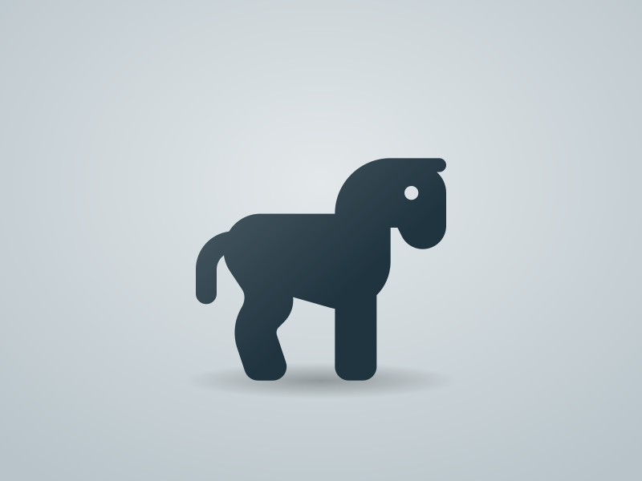
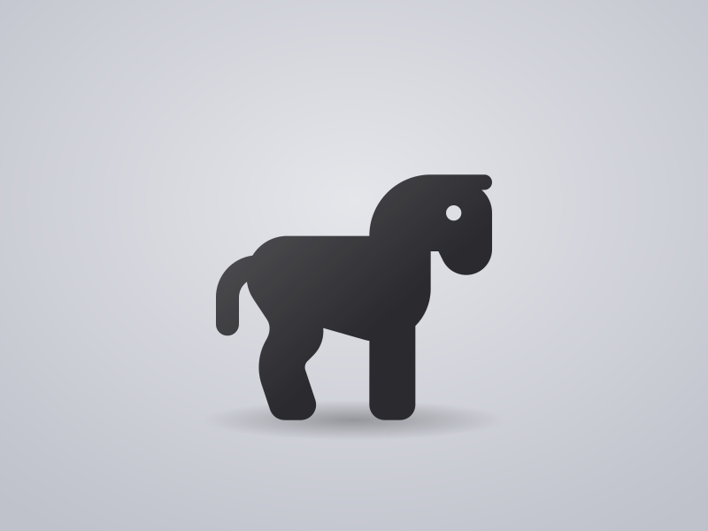
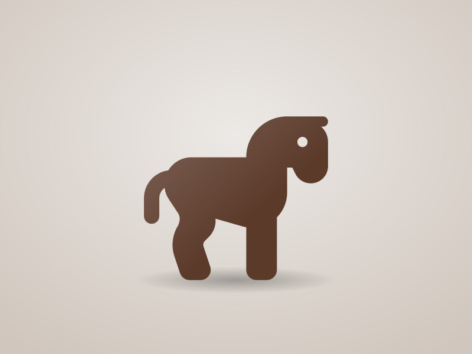
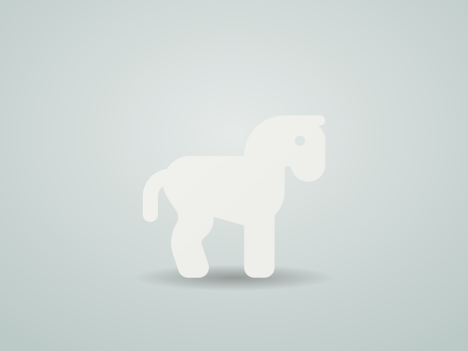

ЛФЗ-1051
Одна из первых послевоенных анималистических моделей завода. Выпускалась более двадцати лет в трёх вариантах исполнения.
| Номер | Исполнение | Годы |
|---|---|---|
| 1042-a | Белый бисквит | 1958–1965 |
| 1042-b | Подглазурная роспись, серая масть | 1962–1974 |
| 1042-c | Надглазурная роспись, золочёный постамент | 1970–1979 |
Конь стоит на задних ногах на овальном постаменте, имитирующем каменистую почву. Грива и хвост проработаны отдельными прядями, что делает модель хрупкой: у большинства сохранившихся экземпляров есть реставрация ушей или пряди хвоста.
Ранние экземпляры в белом бисквите отличаются более чёткой проработкой мускулатуры. В поздних тиражах форма постепенно изнашивалась, детали становились мягче, а постамент получил золочёный кант.
При атрибуции стоит сверять тип клейма с годами выпуска варианта: сочетание раннего клейма с надглазурной росписью встречается на заводских переделках.



